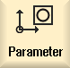

Global R parameters are arithmetic parameters, which exist in the control itself, and can be read or written to by all channels.
You use global R parameters to exchange information between channels, or if global settings are to be evaluated for all channels.
These values are retained after the controller is switched off.
Comments
You can save comments in the "Global R parameters with comments" window.
These comments can be edited. You have the option of either individually deleting these comments, or using the delete function.
These comments are retained after the control is switched off.
Number of global R parameters
The number of global R parameters is defined in a machine data element.
Range: RG[0]– RG[999] (dependent on the machine data).
There are no gaps in the numbering within the range.
| | Machine manufacturer Please observe the information provided by the machine manufacturer. |
Procedure
|  | 1. | Select the "Parameter" operating area. |
| | 2. | Press the "User variable" softkey. |
3. | Press the "Global R parameters" softkey. The "Global R parameters" window opens. |